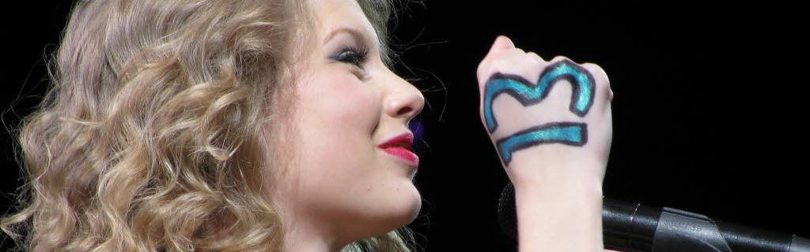

Taylor Swift considers number 13 to be her lucky number. She constantly references it, in her songs, her music videos, in interviews and instagram posts.
"The Lucky One (Taylor's Version)", a song from Swift's 4th studio album, is the 13th track on her album "Red (Taylor's Version).
It has a 13 second intro and the word "lucky" is said 13 times in the song.
Taylor says whenever she is seated in row 13 or row M (the 13th letter) at an award show, she always wins.
If she sees a 13, it will bring her luck, but if she sees no number 13 that day, she'll lose.
Her debut album went platinum in 13 weeks.
Taylor's first number one song on the Billboard Country Chart, Our Song, has a 13 second intro.
Four of her songs - Teardrops on My Guitar, White Horse, Ours and Gorgeous - peaked at #13 on the Billboard Hot 100.
In 2018, Swift won 13 awards.
In the music video for "ME!", there are 13 clouds in one scene.
"Call It What You Want" has a 13 second intro too.
In the music video for "Ours", the floor her cubicle is on is floor 13.
In the music video for "...Ready For It?" the number 13 is written on the left wall in the corridor.
In the "Out Of the Woods" video, she falls 13 times. "Out of the Woods" also has 13 letters.
On October
The music video for "Delicate" garnered over 13M views in its first 24 hours.
In her music video of "You Need to Calm Down", her watch includes the number 13, and the numbers 1 and 2 are exterminated.
Taylor also put 13 gems on her sunglassesand wore a necklace with the number 13
During the scene with the wedding cake in the "I Bet You Think About Me" music video, the top tier of the cake has many 13' and 26's (Which is 13 times 2) written by icing on it.
Click here to come back to home !